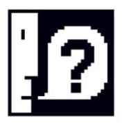

OWASP Top 10
The OWASP top 10 is a publicly shared standard for engineers detaisling
the top 10 most critical and common web security vulnerabilties.
The following notes are based off the latest 2021 publication.
Broken Access Control
Broken access control occurs when such restrictions are not correctly enforced.
Cryptographic Failures
Injection
Insecure Design
Security Misconfiguration
Vulerable and Outdated Components
ID and Authentication Failures
Software and Data Integrity Failures
Security Logging and Monitoring Failures
Server Side Request Forgery